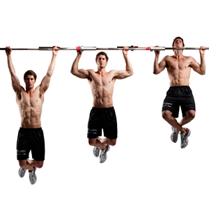
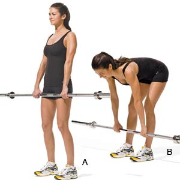
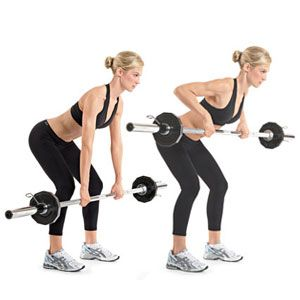
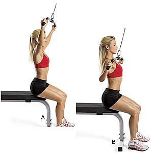

When you're training the back you have to make sure you get the correct posture to avoid serious injury. Keeping a straigh back is key when you're training the back, here are a few of the common lifts for the back.
Pull ups - using a pull up bar, have your palms facing away from you, with a grip wider than shoulder length, keep your back straight and pull yourself up so your chin as above the bar.
Stiff leg deadlifts - this is similar to the deadlift, keep your back straight, and your legs slightly bent, lift the bar using your lower back keeping your back straight.
Bent over rows - this can be done standing freely or having your chest resting on something comfortable. Bend over so your back is as close to parallel with the ground as possible. Lift the bar up to your chest and slowly lowering it back down.
Lateral pull downs - this can only be done with a cable machine. Sit down facing the cable, place your arms as wide as the bar you're going to use for this exercise, pull the bar down until it is just under your chin and control the lift back up.
